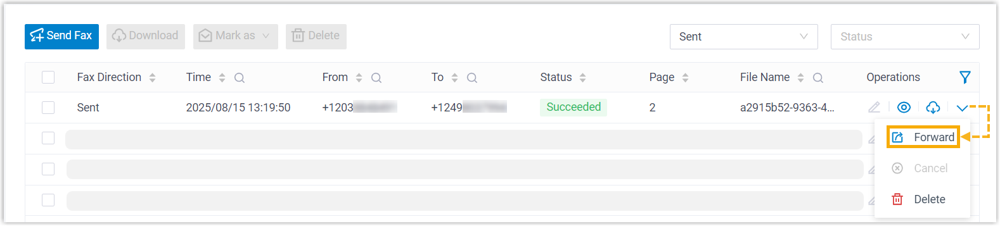

Forward Fax to Email or Another Fax Number
Forwarding a fax is useful in scenarios such as instantly sharing important information with colleagues, keeping a backup of fax documents for future reference, etc. You can forward a fax to any email address or fax number as needed.
Forward a fax to an email address
- Access the fax forwarding page.
- Log in to Linkus Desktop Client, go to .
- On the right of the fax that you want to forward, click
 , then select Forward.
, then select Forward.
- In the pop-up window, configure the following settings.
- Set Forward To to Email.
- Click Add, then select an email type and specify
the destination email address(es).Note: You can add up to 5 email entries.
Email Type Description Extension's Email Send the fax as email attachment to extension users' mailboxes. If you choose this option, select the desired extensions from the Extension/Email drop-down list.Note: Ensure the selected extensions have valid email addresses configured. Otherwise, users will not receive the fax emails.Specified Email Send the fax as email attachment to a specified email address. If you choose this option, enter a custom email address in the Extension/Email field.
- Click Save.
The fax is forwarded to the designated email address as email attachment.
Forward a fax to another fax number
If system administrator has granted you the permission to send faxes, you can forward a fax to another fax number.
- Access the fax forwarding page.
- Log in to Linkus Desktop Client, go to .
- On the right of the fax that you want to forward, click , then select Forward.
- In the pop-up window, set Forward To to
Fax, then click
Save.
You will be redirected to the fax sending page.
- Complete the rest of the settings to forward the fax.